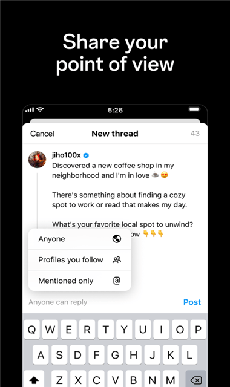

Threads 快问快答：从发帖到联邦宇宙，9 个新手最想知道的问题
Threads 是什么、怎么装、发帖有啥坑、联邦宇宙开不开，整理了一篇问到底的速查表，每个问题给结论。
整理一篇关于 Threads 的快问快答。内容尽量不绕弯，答案第一句就给结论。
Threads 到底是什么？和 X（原推特）有啥不一样？
Threads 是 Meta 推出的短文本社交应用，走的是"文本先于图片"的时间线路线，字数上限 500。和 X 最大的差异在于账号体系——Threads 绑定 Instagram 账号，注册时自动同步你在 Ins 上关注的人，冷启动门槛低很多。另外它原生支持 ActivityPub 联邦宇宙协议，开了互通后内容能流向 Mastodon 等其他服务器，这一点 X 至今没做。想了解完整功能清单可以去Threads官网看。
谁需要装 Threads？
两类人最适合：一类是已经重度使用 Instagram、想把图文之外的长一点的日常碎碎念找个去处的用户；另一类是对开放互联感兴趣、想体验一次"发一条帖全网都能看见"的技术党。如果你既不用 Ins 也不关心联邦宇宙，直接装下来可能会觉得内容池子小、互动不如 X 热闹。
怎么装？有几种打开方式？
三种形态：安卓 App、iOS App、以及浏览器直接访问的网页版（2025 年 4 月启用了独立域名）。手机端功能最全，推送通知、直接拍照上传、多账号快捷切换都只有 App 才有。网页版最大的差异是多栏视图——可以像旧推特的列表一样同屏放"关注流 + 话题 + 自定义信息流"，重度浏览和内容运营党会爱这个。上班族摸鱼时挂在浏览器标签页里也比掏手机低调。安装包从下载获取就行，网页版不用装，浏览器登录同一个 Ins 账号。
发帖难不难？第一次发要注意什么？
发帖器在底部中间的笔和纸图标（网页版在顶部）。流程很简单：打字（500 字符实时计数）→ 按需加图片/视频/投票 → 选回复权限 → Post。新手最容易踩三个坑：多账号用户忘了切账号就发（发帖前看一眼顶部头像）；以为发出去还能随便改——编辑窗口只有 15 分钟，过了就只能删了重发；拿不准的内容发在了公开档案上（公开帖会进公共推荐流，被截图转发不可控，介意的话用幽灵帖）。更多发帖细节和进阶技巧可以去Threads文档查。

点赞和 @ 别人有什么讲究？
点赞是心形图标，点一下再点取消。你赞过的帖子默认会出现在自己档案的"赞"标签页，介意公开可以在档案设置里隐藏。提及别人就是在发帖器或回复框里打 @ + 用户名，输入时会弹出联想列表，从里面选能避免拼错——别手敲错字，@ 后面的用户名必须和对方档案逐字一致才能生效。高频 @ 无关账号是典型骚扰行为，容易被举报限流。被人 @ 进不想聊的对话，可以要求移除提及或者直接屏蔽那个账号。
联邦宇宙开不开？开了会怎样？
先给结论：不确定的话就先别开。开启前你需要确认三件事：档案是公开的、账号已满 18 岁、想清楚历史帖子也可能被同步流出。开启路径是个人主页 → 右上角菜单 → 设置 → 联邦宇宙 → 开启共享。开了之后，支持 ActivityPub 的其他服务器用户可以搜到你并关注，你新发的公开帖会自动流向联邦宇宙，那边的回复和点赞会回流显示。但有个关键细节你要知道：关闭互通后，已经流出去的历史内容不会自动追回删除——各服务器对已同步内容的处理规则不一样，这是协议互通的固有特性，不是 bug。
网页版和 App 数据同步吗？在哪端发都一样？
实时同步，App 里发的帖网页版立刻能看见，点赞收藏也互通。但新功能上线节奏两端不一——投票、幽灵帖这类功能通常 App 端先上，网页版跟进会有延迟。私信在网页版从 2026 年起才逐步开放，之前只能在 App 里收发。视频上传 App 和网页版都支持，但网页版最长 5 分钟。
用下来有什么痛点？
目前三个比较明显的：一是联邦宇宙互通是档案级开关，没有帖子级选择，开了就是全开、关了全关，不能挑着来；二是网页版不能多账号快捷切换，得退出重登；三是幽灵帖只有发帖人自己能看见谁点了赞，私密互动感是有了，但运营数据上确实没东西可以看。
最后一句：值不值得装？
如果你有 Instagram 账号、想要一个比 X 更温和的短文本社区，或者对开放互联想亲自试一次，值得装；如果只是想找个地方刷热榜和吃瓜，现阶段内容池可能还撑不起你的期待。